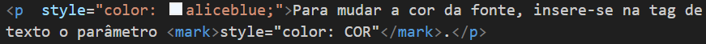

Para mudar coisas nas css, deve-se usar o parametro style="#" nas tags desejadas.
Para mudar a cor do fundo do site, na abertura da tag <body> foi inserido o parâmetro style="background-color: rgb(29, 28, 28);",
isso funciona também em outras tags, como <h1> e <p>.
Para mudar a cor da fonte, insere-se na tag de texto o parâmetro style="color: COR".
Esse método de colocar um style em cada tag é chamado de css inline, mas é muito desusual, nao serve na prática, pois bagunça o código e dificulta manutenções futuras.